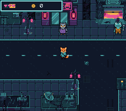

|
OpenSNES
Modern Open-Source SNES Development SDK
|
|
OpenSNES
Modern Open-Source SNES Development SDK
|

The SDK's modules composed into a playable RPG skeleton. Kit the courier walks the Rue basse at night, between a noodle bar, a garage, a junk shop and a canal; the residents each have a line, a locker holds ten credits, and the teal door of an apartment block leads into the raccoon's den. Three things make it a template rather than a demo:
1. The map is a real Tiled map. res/town.tmj holds the terrain, the per-tile collision (each tile's attribute property), the entity positions (the Entities object layer: spawn, residents, the lockers, the door) and each resident's line and look (text and look properties on the object). Adding a resident is a map edit, not a code edit. The build converts the map with the SDK's opensnes-level (res/town.tmj.toml): the VRAM tilemap, one collision byte per cell, and the entities as C defines.
2. A real bordered dialog box, and a HUD. Both are 9-slice panels on BG2 with their text on BG3 above — the classic SNES RPG window, with the layers stacking scene < panel < text. The HUD carries hearts and credits; the credits go up by 10 when you open the lockers.
3. Two scenes. The street, and the den. A scene is a tileset + a palette + a tilemap + a collision map + entities, and the den is its own Tiled map (res/house.tmj). Walking into the door swaps them; the raccoon greets you with no button press.
| Input | Action |
|---|---|
| D-pad | walk (one metatile, 16 px, per step) |
| A | talk to a resident (face it) / open the lockers (face them) |
| walk into the teal door | enter the den; the mat inside takes you back |
ROM mode: LoROM (project default).
| Word address | Content |
|---|---|
| $0000 | the scene's tiles (939 for the street, to $3AB0; 470 for the den) |
| $4000 | BG1's map, 64×64 |
| $5000 | BG2's and BG3's character base: a blank tile, then the font |
| $5400 | BG2's tiles: the frame and the HUD icons (tile 64 from the base) |
| $5800 | BG3's map (the text) |
| $5C00 | BG2's map (the panels) |
| $6000 | Kit's walk (OBJ tiles 0-239) |
| $7000 | the residents (OBJ tiles 256 and up) |
Open res/town.tmj in Tiled: paint terrain with the tileset's tiles, drag the Entities objects, edit a resident's text or look, then make. Tile collision is the attribute property on each tileset tile (FF00 = solid, 0 = walkable). Entities are objects in the Entities layer, typed spawn, npc, locker or door (the den's are arrival, host and mat). A resident's look indexes looks[] in main.c: 0 the owl, 1 the frog, 2 the rat, 3 the pangolin, 4 the raccoon.
The street itself is composed by devtools/art_assets/rpg.py (contributors). The ground is laid on the metatile grid from PixelLab's tiles (assets/neo-lumen/tiles/): two Wang sets, road to sidewalk and canal to sidewalk, placed by the terrain at each metatile's corners, so the curbs and the quays follow the layout; variants of the full tiles (cracks, a puddle, a grate) drawn from a seeded generator so every build is the same; the street's centre line, the bridge deck with its railings, the alleys. The buildings and props of assets/neo-lumen/town/ are placed over it, and the whole is cut into its distinct 8×8 tiles — 32 to a row of the tileset, the width the tileset converter's map is written in. Running it again rewrites both maps from its layout.
| File | What | Made by |
|---|---|---|
| res/tileset.png, res/town.tmj | the street's 939 tiles and its map, entities included | devtools/art_assets/rpg.py, from assets/neo-lumen/town/ and assets/neo-lumen/tiles/ (PixelLab) |
| res/interior.png, res/house.tmj | the den's tiles and map | the same, from assets/neo-lumen/backgrounds/den.png (PixelLab) |
| res/town_fixed.pal, res/interior_fixed.pal | the city's 15 colours, imposed on both | the same |
| res/hero.png | Kit's walk, 15 frames of 32×32 | the same, from characters/topdown/kit_walk_sheet.png |
| res/owl.png … res/raccoon.png | the five residents from above, one 32×32 frame each | the same, from characters/topdown/ |
| res/uibox.png | the 9-slice frame, two hearts and a credit chip | the same, drawn there |
CC0, like the rest of the Néo-Lumen assets (assets/neo-lumen/README.md).
console, dma, background, sprite, text, input, collision, panel